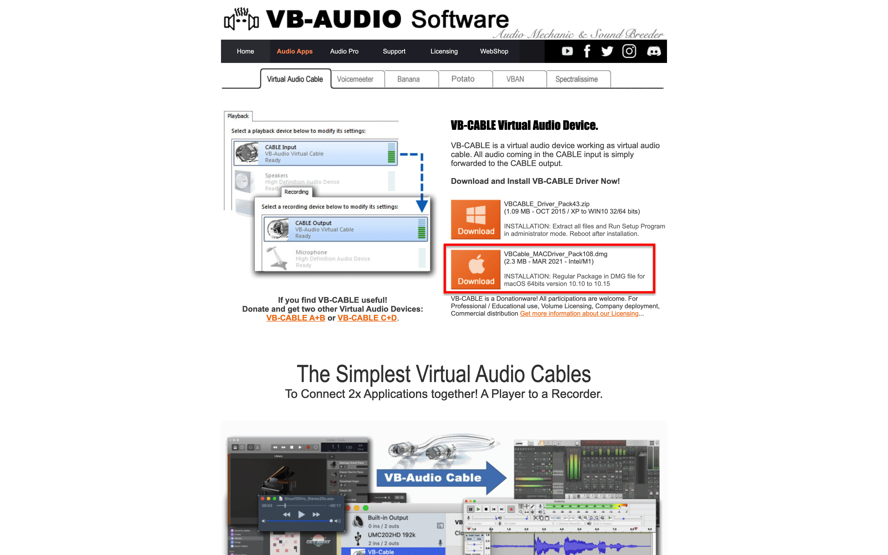
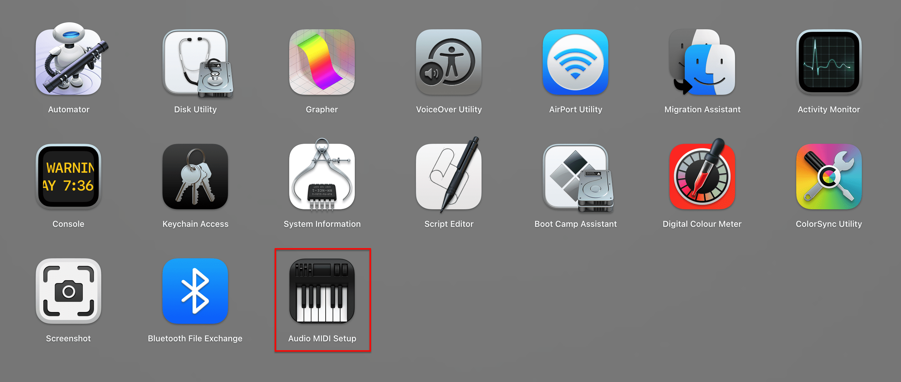

MacOS screen recording with internal audio SOLVED.
The native screen recorder of macOS is quite simple and effective. The only drop back of it is, it does not record internal audio. There might be other pieces of software that can be used, but they can be either paid, challenging to use, or both.
In this ‘how-to’ guide let’s solve all the above problems.
Step 1: Download the 'VB Cable' application and install it.
Step 2: After installation, open the Audio MIDI Setup.
Step 3: Click on the + icon below and choose the multi-output device option. Now,
- Check the ‘use’ box of VB cable and your default output device(external headphones in my case).
- Uncheck drift connect from all the devices. It doesn’t change anything in my usage.
- Set the ‘Master Device’ to your default output device.
- Set the ‘Sample Rate’ to 44.1kHz.
- Also, you can rename it to ‘Output: External + VB’ to have it differentiated from other audio devices.
Step 4: Alright now, click on the + icon below and choose the aggregate device option. Now,
- Check the ‘use’ box of VB cable
Optional: Also check your microphone(MacBook Pro microphone in my case) to include your audio as well. - Uncheck drift connect from all the devices. It doesn’t change anything in my usage.
- Set the ‘Clock Source’ to your default microphone device.
- Set the ‘Sample Rate’ to 44.1kHz.
- Also, you can rename it to ‘Input: External + VB + Mic’ tto have it differentiated from other audio devices.
Now all the one-time settings are set, and we are ready to go.
Step 5: Change the output device to ‘Output: External + VB’ from menubar/sound.
NOTE: Before changing the output device, set the output volume.
Step 6: Open the native screen recorder with Cmd + Shift + 5. Set it to the recording option.
Then ‘Options’ tab will appear. Click and set microphone to 'Input: External + VB + Mic’
Now can record anything, from your discord video call to recording your online lecture.
Great Thanks for reading.
Wanna know how the magic happened? Stay with me.
After changing the recording's setting, the internal audio is transmitted via the VB cable to input. With the help of Audio MIDI Setup, both the VB cable audio and microphone are treated as one parallel stream in the input channel. This input channel audio is channelized to the recording's input system.
Hope this was helpful. ; )